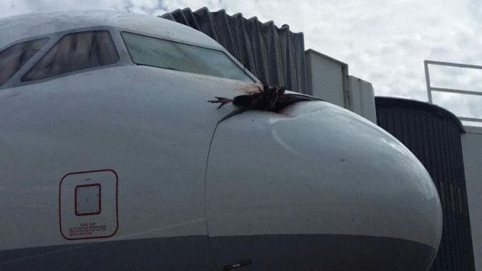

飞机突发状况之鸟击
在航空界有一个为大家熟知的术语叫“鸟击”，是指飞行器在起飞、爬升、巡航或降落过程中被鸟类撞击而发生的影响飞行安全的事件、事故或事故征候。其中航空器发动机的鸟击事件又称为“吸鸟”。在飞机出现以前，没有高速人造飞行器，鸟类在空中的飞行与人类的活动互相没有重叠，不会造成危害，飞机的出现使得情况发生了变化。随着航空器数量的不断增加、体积越来越大、飞行速度越飞越快，发生鸟击的可能性随之增加。据统计全世界每年大约会发生1万次以上的鸟击事件，国际航空联合会把鸟害升级为A类航空灾难。
一、鸟击发生的原因
在机场选址方面，首先机场的选址一般都是远离城市中心的城郊，周围人类建设和活动较少，常常存在鸟类栖息繁殖的场所；其次机场内建筑多开阔平坦，由于人类活动的影响气温、地温较高，许多机场还建有草坪，造成机场区域内昆虫、鼠类、野兔、植物生长旺盛，生物量较高，为不同生态位的鸟类提供充足的食物；第三，随着机场的建设和运营，临近机场的区域常常形成新的社区，人类活动增加，将这一区域的鸟类驱赶到相对平静的机场区域；最后空旷开阔的机场常常成为一些候鸟迁徙之前的聚集地或者迁徙途中的落脚点。这些因素综合起来造成在机场附近的近地空域，鸟类的活动与飞机的起降形成交叉，从而导致鸟击事件的发生。
在飞行器方面，高速度是导致鸟击的重要原因，高速度使得绝大多数鸟类无法躲避飞行中的飞机；另外喷气式飞机进气口强大的气流常会将飞过的鸟类吸入发动机，造成鸟击事件。
二、鸟击的破坏力
飞机与飞鸟，一个是“钢筋铁骨”，一个是“血肉之躯”，在一般人看来，“血肉之躯”的小小飞鸟与钢铁飞机在偌大的天空相撞，犹如以卵击石——卵破碎而石头无恙。然而事实却并非如此。
运动是相对的。当鸟儿与飞机相对而行时，虽然鸟儿的速度不是很大，但是飞机的飞行速度很大，这样对于飞机来说，鸟儿的速度就很大。计算此时鸟对飞机的撞击力，根据动能定理，E =1/2×MV^2，其中M代表鸟的质量，单位是公斤；V代表鸟与飞机的相对速度，单位是米/秒。绝大多数鸟类质量很轻、飞行速度也很低，两者可以忽略不计，由此可以看出，鸟相对于飞机的撞击力与飞机的飞行速度的平方成正比，飞机飞行速度越大与鸟撞击造成的破坏力就越大。通过计算我们会发现，一只重量为100克大小的鸟，如果与一架正在起降的飞机相撞，由于此时飞机的飞行速度不会低于每小时360千米，那么在相撞的只有零点零几秒的时间里，就会产生约500焦耳的动量，与一颗手枪子弹的动能相仿（手枪子弹5-9克，速度300-500米/秒）。而飞机的速度越快，产生的动能将会越大，这些能量在瞬间被飞机吸收，接触部位就会产生不同程度的破坏。
在航空器运行过程中，不同部位、不同类型的设备遭受鸟击的可能性不尽相同，造成的撞击后果也有所差异。对于螺旋桨飞机，鸟击会导致桨叶变形乃至折断，使得飞机动力下降；对于喷气式飞机，飞鸟常常会被吸入进气口，将涡轮发动机的扇叶变形，或者卡住发动机，使发动机停机乃至起火。据资料统计显示，鸟击事件主要撞击部位通常集中在发动机、起落架、风挡、雷达罩、机翼/旋翼、着陆灯等部位，而发动机是鸟击发生率最高的部位。对飞机发动机的破坏常常是致命的，会直接导致飞机失速坠毁。

三、鸟击发生的规律
鸟击发生的季节主要集中在春、秋两季，约占80%，前者主要时雏鸟学飞阶段，避让能力弱，感官不完备，后者主要是侯鸟类迁徙、换毛；而冬季鸟类更喜欢到居住区觅食。每天发生鸟击的时段不尽相同，但统计规律显示68%的鸟击出现白天，夜晚占23.8%，清晨和傍晚仅占8%。其实，在黄昏前后光线暗淡，鸟类辨别能力减弱，精力疲惫，一旦遭遇飞机这个庞然大物更容易发生撞击。鸟击事件在黄昏发生概率不高只是因为鸟类在这一时段活动减少而致。
据鸟类学家统计，目前世界上的鸟共有8000余种。一般鸟类的飞行高度大多在400米以下；飞得较高的鹫则达到3000米左右；生活在欧洲阿尔卑斯山的燕峰鸟的飞行高度可达3500-4000米；而飞得最高的鸟则当属能飞越喜马拉雅山的天鹅，它们能在9000米左右的高空中自由自在地飞翔。鸟儿们低空飞行的高度范围，一般是在距离地面60米到100米的区域内，而这正是飞机起降的高度，而这也是飞机最不稳定的时候。在飞机飞行的起飞、爬升、下降、进近和着陆阶段为鸟击多发阶段，根据统计，超过90%的鸟击发生在机场和机场附近空域，50%发生在低于30米的空域发生，仅有1%发生在超过760米的高空。
四、鸟击造成的经济损失
鸟击不仅会带来安全上的危害，同时也会带来巨大的经济损失。
如今的喷气发动机是更为平稳的精密机器。无论吸入一只多么小的鸟，最低限度是需要进行检查。即使是轻微损坏了第一级风扇，也可能导致高昂的代价来维修或更换受损的风扇叶片（如CFM56发动机上一个新叶片需要16000美元）。而更换发动机通常需要花费几百万美元。除了修理或更换航空器受损零部件产生的直接损失外，航空器运行的不正常，如中断起飞、返航等还会干扰机场的正常运营，可能造成旅客极为反感的航班延误，并增加机场和航空公司管理成本，而此类间接损失、附属损失难以精确估算。美国FAA的数据表明，在考虑航空器停机损失的情况下，间接损失超过直接损失。国际上当前认为间接损失为直接损失的4倍。